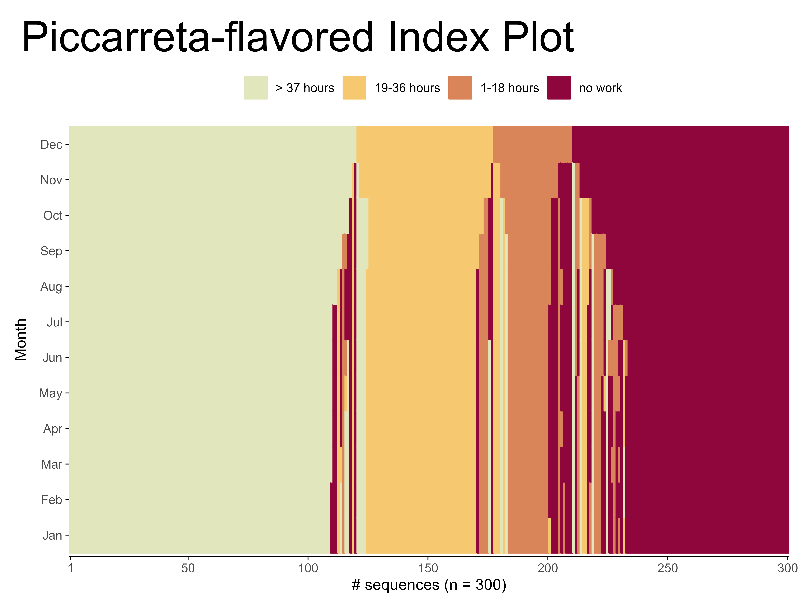

{ggseqplot}
ggplotify sequence plots (updated slides)

Motivation
- {TraMineR}’s default plots appearance almost publication-ready
- But: virtually always some adjustments are necessary
- Requires some knowledge of base R’s {plot}
- However, today most (new) R users prefer {ggplot2}
Motivation
Goals:
- Provide a package that uses {ggplot2} to render sequence plots
- and that allows for using {ggplot2} functions and extensions to change the plot appearance
Tasks:
- reshape sequence data into format required by {ggplot2} (usually long data format)
- use appropriate geom_* functions to rebuild seqplot functions
What we can do with {ggseqplot}
| Summarization plots | TraMineR functions | ggseqplot function | ggplot2 function |
|---|---|---|---|
| State Distribution Plot | ggseqdplot |
geom_bar |
|
| Entropy Line Plot | ggseqeplot |
geom_line |
|
| Modal State Sequence Plot | ggseqmsplot |
geom_bar |
|
| Mean Time Plot | ggseqmtplot |
geom_bar |
|
| Transition Rate Plot | seqtrate |
ggseqtrplot |
geom_tile |
What we can do with {ggseqplot}
| Representation plots | TraMineR functions | ggseqplot functions | ggplot2 and related functions |
|---|---|---|---|
| Sequence Index Plot | seqiplot |
ggseqiplot |
|
| Sequence Frequency Plot | seqfplot |
|
|
| Representative Sequence Plot |
|
||
| Relative Frequency Sequence Plot | seqrfplot |
|
Example
We use the well-known example data from {TraMineR} to render some plots.
State distribution plots
State distribution plots
State distribution plots
State distribution plots
State distribution plots
ggseqdplot(actcal.seq,
border = TRUE) +
# Built-in months abbreviations for axis labels
scale_x_discrete(labels = month.abb) +
# change the color palette (fill and border color)
scale_fill_discrete_sequential("heat") +
# apply & adjust alternative theme
theme_ipsum() +
theme(
legend.position = "bottom",
legend.title = element_blank(),
legend.text = element_text(size = 11)
)State distribution plots
Sequence index plots
Sequence index plots

Sequence index plots
Sequence index plots
Sequence index plots
Sequence index plots
ggseqiplot(actcal.seq, sortv = "from.end") +
# Use months abbreviations for axis labels
scale_x_discrete(labels = month.abb) +
# change the fill and border color
scale_fill_discrete_sequential("heat") +
scale_color_discrete_sequential("heat") +
# add a title and a axis title
labs(x = "Month",
title = "Piccarreta-flavored Index Plot") +
# let the time run "bottom-up" instead of "left-right"
coord_flip() +
# Change the position and size
# of the title and the legend position
theme(legend.position = "top",
plot.title = element_text(size = 30),
plot.title.position = "plot")
Representative sequence index plots
Transition rate plots
Some words of caution
Warning
- I am working on this package alone in my spare time and I am a novice R developer
- Double check ggseqplots by comparing them to the TraMineR plots
Important
- Don’t use ggseqrfplot until the current issue is fixed
- Dependencies are not specified correctly: update tidyverse package(s)
Some words of caution
Warning
- I am working on this package alone in my spare time and I am a novice R developer
- Double check ggseqplots by comparing them to the TraMineR plots
Important
Don’t use ggseqrfplot until the current issue is fixedDependencies are not specified correctly: update tidyverse package(s)- Both issues should be fixed after update to version 0.8.3 (on CRAN since 2023-09-22)
Future plans
- High priority:
Fix known issues (rfplot; dependencies) - Low priority: include additional plot types and revise current functions
Marcel Raab | SAA Webinar Series | September 2023